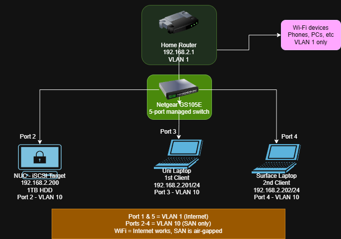

Designing, implementing, and evaluating a Storage Area Network (SAN) using consumer-grade hardware and open-source tools.
1. Introduction
This research document details the personal project of building a functional SAN from scratch. Unlike Network Attached Storage (NAS) which operates at the file level, this project focuses on block-level storage to demonstrate advanced infrastructure skills.
The core objective was to build a system capable of supporting enterprise virtualization workloads using only existing home hardware, specifically proving that consumer-grade devices can mimic enterprise storage behavior.
2. Context & Problem Statement
2.1 The Limitations of NAS
Mentors advised that a standard NAS project was insufficient for Semester 6 competencies. NAS introduces overhead from file system translation and metadata operations, resulting in higher latency and lower IOPS.
2.2 The Solution: iSCSI SAN
Storage Area Networks provide direct block-level access, presenting raw disks to clients. This enables near-native performance critical for virtualization. The challenge was to implement this without the expensive hardware usually associated with SANs (Fibre Channel, dedicated arrays).
3. Architecture & Hardware
The infrastructure creates a "zero-cost" simulation of enterprise storage using repurposed hardware.
| Device | Role | IP Address | Specs/Notes |
|---|---|---|---|
| Intel NUC | iSCSI Target | 192.168.2.200 | i5, 8GB RAM, Ubuntu Server 24.04 |
| Surface Laptop | Initiator 1 | 192.168.2.202 | Secondary client for multi-path testing |
| Uni Laptop | Initiator 2 | 192.168.2.201 | Windows 11, Microsoft iSCSI Initiator |
| Netgear GS105E | Switch | 192.168.2.4 | Managed, VLAN-capable |

4. Implementation
The implementation utilized the LIO (Linux-IO) stack via targetcli. Below are the specific configurations used to bring the SAN online.
4.1 Backend Storage Preparation
The 1TB external HDD was wiped and formatted with ext4. A permanent mount point was created to ensure stability across reboots.
# Wipe old partitions
sudo mkfs.ext4 -F /dev/sda
# Create mount point
sudo mkdir /san
sudo mount /dev/sda /san
# Verify block device
lsblk
# Result: sda -> 931.5G disk4.2 Configuring the iSCSI Target
Using targetcli, a 100GB file-backed LUN was created. This mimics a physical disk for the clients.
sudo targetcli
# 1. Create the backstore (virtual disk)
/backstores/fileio create name=lun0 file_or_dev=/san/lun0.img size=100G
# 2. Create the IQN (Identity)
/iscsi create iqn.2025-11.nl.fontys:san
# 3. Map the LUN to the Target
/iscsi/iqn.2025-11.nl.fontys:san/tpg1/luns create /backstores/fileio/lun0Note: Snapshots were created using `dd` to allow for instant rollback during testing.
5. Security Measures
Enterprise storage must be secure. Two layers of security were implemented: Authentication (Layer 7) and Network Isolation (Layer 2).
5.1 The CHAP Challenge
Initial attempts to use Mutual CHAP failed due to a known Windows 11 limitation. The final configuration used Unidirectional CHAP.
# Access Control List creation
create acl iqn.1991-05.com.microsoft:kevin-s-lap
# Setting Authentication
set auth userid=kevin password=KevinPass123
# Mutual auth disabled due to Windows bug5.2 VLAN Isolation
The Netgear GS105E was configured to isolate ports 2, 3, and 4 into VLAN 10. This "air-gaps" the SAN traffic from the standard home Wi-Fi traffic (VLAN 1).
- VLAN 1: Internet & Home Router.
- VLAN 10: SAN Traffic Only (NUC + Clients).
6. Performance Benchmarks
Benchmarks were conducted using CrystalDiskMark 9.0.1. The comparison focused on the iSCSI SAN versus a simulated NAS (SMB) on the same hardware.


| Metric (CrystalDiskMark) | iSCSI SAN (Block) | NAS (File) | Analysis |
|---|---|---|---|
| Seq. Read (Q8T1) | 117.41 MB/s | 117.52 MB/s | Tie: Saturated Gigabit Ethernet |
| Random Read (4K Q32) | 101.51 MB/s | 11.25 MB/s | SAN Wins (~9x): Block-level efficiency |
| Random Write (4K) | 0.16 MB/s | 9.05 MB/s | HDD Bottleneck: USB translation layer struggle |
Analysis: While sequential speeds were network-bound, the random read performance of the SAN was vastly superior. This confirms why enterprises prefer SAN for databases and VM boot drives.
7. Conclusion & Recommendations
The project successfully answered the main research question: A functional, secure SAN can be built with consumer hardware for €0.
- Functionality: Validated via multi-client access and daily use as "S:" drive.
- Security: Secured via CHAP and VLAN 10.
- Future Proofing: Directory structure prepared for ESP32 MQTT ingestion.
Recommendation: For production use, the USB HDD backend must be replaced with a SATA SSD to resolve the random write bottleneck.